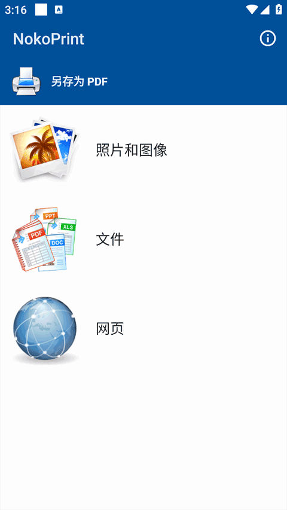
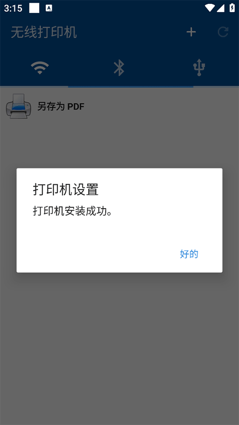

换过三台打印机后，我为什么把 NokoPrint 留在手机里
Android 打印生态长期是各家厂商 App 各自为政的乱局，NokoPrint 能不能成为那个跨品牌的通用解？用过一段时间后给你一个有立场的结论。
先说这个类目的现状
Android 上的打印一直是个尴尬的品类。Google Cloud Print 在 2020 年就停了，系统自带的 Mopria 协议覆盖率凑合但体验糙，剩下的就是各家打印机厂商各自为政的自有 App——爱普生 iPrint、兄弟 iPrint&Scan、惠普 Smart，每个都只认自家电。
这就导致一个很实际的问题：家里换一台打印机，旧的 App 就废了；公司用的是另一台品牌，还得再装一个。出门办事遇到陌生打印机，更是只能靠电脑凑合。
NokoPrint 就是在这个生态夹缝里出现的——它不是任何一家打印机厂商的附属工具，而是一个第三方的跨品牌通用打印方案，官方下载渠道获取安装包就行。定位很明确：让你的 Android 手机只装一个 App，就能对付市面上绝大多数打印机，完整支持列表在NokoPrint官网上可以查到。
它为什么值得单独写
同类工具不是没有，但 NokoPrint 在三个点上做得比别家实在。
Office 文档直接打——这是最痛的那个点
我之前用某款通用打印 App 遇到过一个经典场景：客户发了 PDF 合同到邮箱，我在手机上打开想直接打印，结果那个 App 只认图片格式，PDF 要先下载到本地再导入，折腾了四五步才出纸。后来换 Word 附件，更是直接报格式不支持。
NokoPrint 不一样——它内置了 Office 引擎，PDF、Word、Excel、PPT 都能直接解析打印。在邮箱里长按附件选分享，就能直接调到 NokoPrint，选完打印机就出纸。出差打印合同、电子机票、电子发票这些高频场景，都是一步到位。

这个差异看着不大，但在移动端打印的真实使用频率里，邮件附件打印占了相当大的比例。同类工具要么不支持 Office 格式，要么需要额外装阅读器中转，NokoPrint 把这层摩擦直接抹掉了。
品牌兼容的广度——Brother 和 Epson 都是"优秀"
我家先后用过爱普生连供、兄弟激光、惠普喷墨三台打印机，NokoPrint 在这三台上面的表现几乎没有差别——Wi-Fi 扫描自动发现，WPS 一键连接，打印质量调档也都正常。
翻了一下NokoPrint文档的支持情况，Brother 的 MFC、DCP、HL 全系列标了"优秀"，Epson 的 EcoTank L 系列、WorkForce WF 系列也是"优秀"。对比一下生态里其他选手：AirPrint 只服务苹果自家设备，厂商自有 App 只认自家型号，NokoPrint 在跨品牌覆盖这件事上确实做得比两边都宽。
当然也要说句公道话——这跟 Epson、Brother 本身对 AirPrint 和 Mopria 的兼容性做得到位有关，NokoPrint 是站在了好肩膀上。但能把这些协议统一封装到一个 App 里，让用户不用管底层是什么协议、直接点扫描就行，这层用户体验的整合本身也是价值。

连接方式的灵活度
有些厂商 App 会强行引导你走自家的云打印服务，哪怕你就在同一个 Wi-Fi 下也得绕一圈。NokoPrint 的连接路径相对干净：同一 Wi-Fi 下自动 mDNS 发现，支持 WPS 一键配对，打印机没路由器还能走 Wi-Fi Direct 直连，实在不行还有蓝牙和 USB-OTG 的兜底选项。
尤其 Wi-Fi Direct 这个场景我挺有感触的——在酒店或者临时办公点，打印机可能没接入公共 Wi-Fi，开一下 Direct 模式手机直接连打印机就能打，不用再去折腾网络配置。
它的取舍——不是万能的
说了三个优点，也得说说它没做到的地方。
首先是对网络环境有要求。 打开 Wi-Fi 扫描发现一台打印机都没有的时候，排查起来是个系统工程：打印机是不是真的连上网了？手机和打印机是不是在同一个 SSID 下？路由器有没有开 AP 隔离？这些问题在厂商自有 App 里其实也要面对，但 NokoPrint 作为通用方案，不会像厂商 App 那样给你一堆针对性的引导流程，只能靠用户自己对着排查清单一步步来。
然后是平台限制。 它是 Android 专属的，iOS 用户有 AirPrint 根本不需要这个。这不是批评，只是它的定位决定了边界。
还有标签打印机这类小众机型。 Brother 的电子标签打印机 PT-D210、QL-700 这些，NokoPrint 对纯文本可能能凑活打一下，但专用模板、条码、二维码这些高级功能还是得回厂商的 iPrint&Label。这个取舍合理——小众机型不值得通用方案投入太多资源。
最后是打印机本身的维护功能，比如打印头清洗、耗材状态查看这些，NokoPrint 不碰，该回到打印机面板或厂商专用 App 就回去。通用方案把自己定位在"打印这件事"本身，不越界，我觉得这个边界感是对的。
选购结论
什么样的人选 NokoPrint：
- Android 用户，家里或办公室不止一个品牌的打印机
- 经常需要在手机上直接打印邮件附件（Office 文档、PDF）
- 想摆脱厂商 App 的绑定，手机里只留一个打印工具
什么样的人可以不用它：
- iOS 用户，AirPrint 已经够用
- 家里只有一台打印机，厂商自带的 App 用着也顺手
- 有专业照片打印需求，需要精细调参和色彩管理
总结一下：如果你在 Android 生态里因为多品牌打印机切换而装过不止一个厂商 App，或者出过"手机上的 Office 文档怎么才能直接打出来"的难题，NokoPrint 值得你把它留在手机里。它不是完美的，但它在跨品牌这件事上做得最省心。
如果想更深入了解使用细节，完整的文档资料在GitHub、Gitee和GitCode上都有同步维护，国内网络访问 Gitee 和 GitCode 会更顺畅一些。